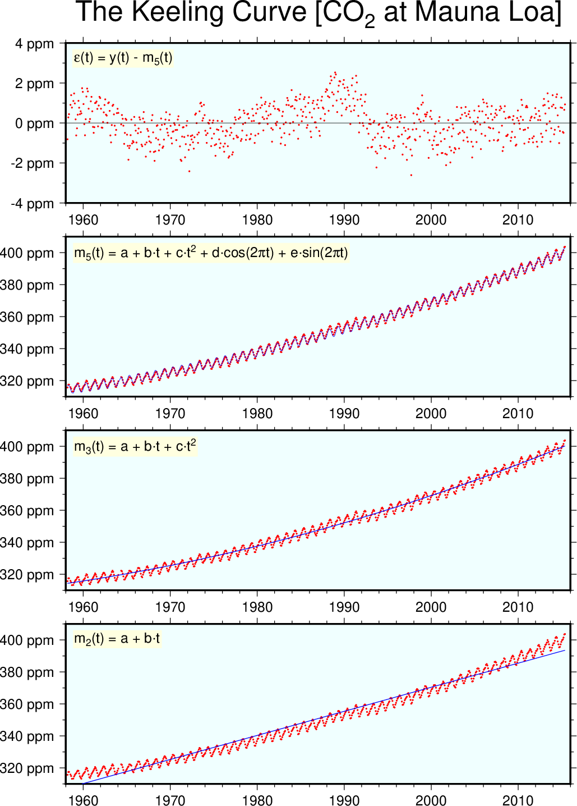

(45) Trend modeling¶
In this example show how the module trend1d is used to fit the CO2 data set collected from the top of Mauna Loa. This yields the famous Keeling curve.
#!/bin/bash
# GMT EXAMPLE 45
# $Id$
#
# Purpose: Illustrate use of trend1d mixed models
# GMT modules: pstext, psxy, trend1d
# Unix progs: echo, rm
#
ps=example_45.ps
# Basic LS line y = a + bx
gmt trend1d -Fxm CO2.txt -Np1 > model.txt
gmt psxy -R1958/2016/310/410 -JX6i/1.9i -P -Bxaf -Byaf+u" ppm" -BWSne+gazure1 -Sc0.05c -Gred -K CO2.txt -X1.5i > $ps
gmt psxy -R -J -O -K -W0.5p,blue model.txt >> $ps
echo "m@-2@-(t) = a + b\264t" | gmt pstext -R -J -O -K -F+f12p+cTL -Dj0.1i -Glightyellow >> $ps
# Basic LS line y = a + bx + cx^2
gmt trend1d -Fxm CO2.txt -Np2 > model.txt
gmt psxy -R -J -O -Bxaf -Byaf+u" ppm" -BWSne+gazure1 -Sc0.05c -Gred -K CO2.txt -Y2.3i >> $ps
gmt psxy -R -J -O -K -W0.5p,blue model.txt >> $ps
echo "m@-3@-(t) = a + b\264t + c\264t@+2@+" | gmt pstext -R -J -O -K -F+f12p+cTL -Dj0.1i -Glightyellow >> $ps
# Basic LS line y = a + bx + cx^2 + seasonal change
gmt trend1d -Fxmr CO2.txt -Np2,f1+o1958+l1 > model.txt
gmt psxy -R -J -O -Bxaf -Byaf+u" ppm" -BWSne+gazure1 -Sc0.05c -Gred -K CO2.txt -Y2.3i >> $ps
gmt psxy -R -J -O -K -W0.25p,blue model.txt >> $ps
echo "m@-5@-(t) = a + b\264t + c\264t@+2@+ + d\264cos(2@~p@~t) + e\264sin(2@~p@~t)" | gmt pstext -R -J -O -K -F+f12p+cTL -Dj0.1i -Glightyellow >> $ps
# Plot residuals of last model
gmt psxy -R1958/2016/-4/4 -J -O -Bxaf -Byafg10+u" ppm" -BWSne+t"The Keeling Curve [CO@-2@- at Mauna Loa]"+gazure1 -Sc0.05c -Gred -K model.txt -i0,2 -Y2.3i >> $ps
echo "@~e@~(t) = y(t) - m@-5@-(t)" | gmt pstext -R -J -O -F+f12p+cTL -Dj0.1i -Glightyellow >> $ps
rm -f model.txt

{kind=link}
Trend Modeling.